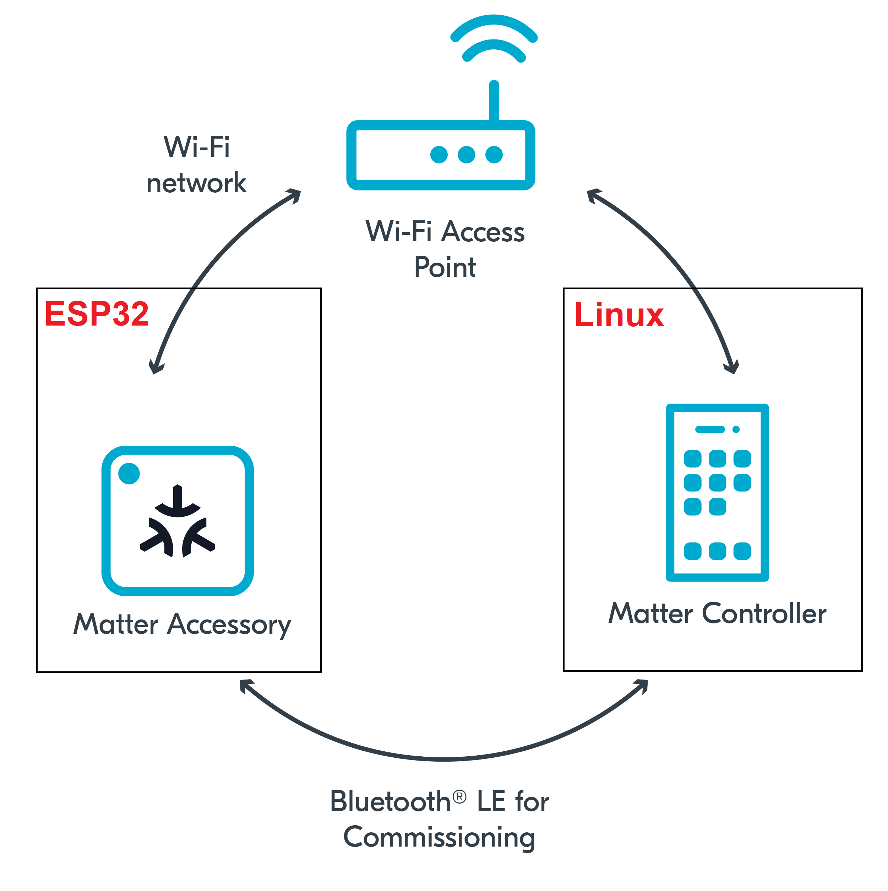

In this codelab we will show you how to code, build and install a Matter sample light app on the ESP32.
In this codelab, you will:

in this CodeLab we will run the Matter Accessory on an ESP32 microcontroller and the Matter Controller on a Linux Host. This will allow us to create a simple Matter Network very quickly and we will learn how to commission Matter devices over BLE.
This set of Codelabs will use Ubuntu 22.04 on a Amd64 based architecture.
You will need
Ubuntu 22.04 with a Bluetooth interfaceThe total codelab will take approximately a Duration of 30 minuates to complete.
A guide on how to install ESP-IDF is available on the Espressif's Matter SDK repo
cd ~
mkdir Project
cd Project
git clone --recursive https://github.com/espressif/esp-idf.git
cd esp-idf; git checkout v5.1.2; git submodule update --init --recursive;
./install.sh
cd ..
git clone --depth 1 https://github.com/espressif/esp-matter.git
cd esp-matter
git submodule update --init --depth 1
cd ..
cd esp-idf
source ./export.sh
cd ..
cd esp-matter
source ./export.sh
cd ./connectedhomeip/connectedhomeip
./scripts/checkout_submodules.py --platform esp32 linux --shallow
cd ../..
./install.sh
cd ..
cd ./connectedhomeip/connectedhomeip
./scripts/checkout_submodules.py --platform esp32 darwin --shallow
cd ../..
./install.sh
cd ..
Note: this process can take a while the very 1st time you install matter.
Before building our Matter controller and sample app, we need to install a few OS specific dependencies.
In this section we will code a sample matter light app for the ESP32.
cd ~/Projects
git clone https://github.com/oidebrett/starter-esp-matter-app.git
cd starter-esp-matter-app
1.1. Set up Cache for quicker compiling
Ccache is a compiler cache. Matter builds are very slow and can take a lot of time. Ccache caches the previous compilations and speeds up recompilation in subsequent builds.
export IDF_CCACHE_ENABLE=1
1.2. Make sure you set up the ESP-IDF environment before coding and compiling
cd ../esp-idf
source ./export.sh
cd ..
cd esp-matter
source ./export.sh
cd starter-esp-matter-app
Now that our development environment is ready we will move on to actually coding a sample light app.
A typical Matter application on the ESP32 relies on callbacks. The Espressif engineers have suggested a structure for Matter applications that decomposes and isolates the main handling for callbacks. This is done in the app_driver.cpp file
Open the app_driver.cpp file in the main folder and add the following code at the end of the file. This will initialise everything that we need to handle the LED lights on the ESP32 for this example app.
app_driver_handle_t app_driver_light_init()
{
/* Initialize led */
led_driver_config_t config = led_driver_get_config();
led_driver_handle_t handle = led_driver_init(&config);
return (app_driver_handle_t)handle;
}
In the app_main.cpp file we will call this initialisation function. Copy the following into the app_main.cpp and place it under the comment that says "Initialize driver"
/* Initialize driver */
app_driver_handle_t light_handle = app_driver_light_init();
Every Matter application requires a node. This is covered in the lesson on the Matter Data Model. We will create a matter node and add some callbacks that will be used to handle things when attributes are updated.
Copy the following code and place it into the app_main.cpp file under the comments "Create a Matter node and add the mandatory Root Node device type on endpoint 0"
/* Create a Matter node and add the mandatory Root Node device type on endpoint 0 */
node::config_t node_config;
node_t *node = node::create(&node_config, app_attribute_update_cb, app_identification_cb);
Once we have created the Node we then create the endpoint that will represent this light. Add the following code under the code you previously implemented
on_off_light::config_t light_config;
light_config.on_off.on_off = DEFAULT_POWER;
light_config.on_off.lighting.start_up_on_off = nullptr;
endpoint_t *endpoint = on_off_light::create(node, &light_config, ENDPOINT_FLAG_NONE, light_handle);
4.1. Check that everything was set up correctly
Its good to do some error checking so add the following code under where it says "Confirm that node and endpoint were created successfully"
if (!node || !endpoint) {
ESP_LOGE(TAG, "Matter node creation failed");
}
4.2. Save the light endpoint id for later as we will want to check that any attribute changes or events are for this particular endpoint and not others. Add this code under where it says " Get Endpoint Id " and change the logging to show the endpoint id.
light_endpoint_id = endpoint::get_id(endpoint);
ESP_LOGI(TAG, "Light created with endpoint_id %d", light_endpoint_id);
When we create a node you will notice that we pass the create function two callback functions. These callback functions are used to handle the callbacks from the Matter underlying libraries.
We need to implement these callbacks in app_main.cpp. But you will notice that we are aiming to isolate the callback code in the app_driver.cpp file so the callbacks in app_main.cpp will simply invoke the callbacks in the app_driver.cpp file.
Add the following code to the end of the app_main.cpp file to the app_attribute_update_cb function unwithin the if (type == PRE_UPDATE) code block where it says "Do stuff here".
if (type == PRE_UPDATE) {
/* Driver update */
app_driver_handle_t driver_handle = (app_driver_handle_t)priv_data;
err = app_driver_attribute_update(driver_handle, endpoint_id, cluster_id, attribute_id, val);
}
We will now implement that driver code that handles the attribute updates. As mentioned before, we are aiming to isolate our code into the app_driver.cpp file. So we will update the "app_driver_attribute_update" function to handle attribute changes.
Add the following code to the app_driver_attribute_update function where it says "Do stuff here".
if (endpoint_id == light_endpoint_id) {
if (cluster_id == OnOff::Id) {
if (attribute_id == OnOff::Attributes::OnOff::Id) {
err = app_driver_light_set_on_off(val);
}
}
}
This code checks that the endpoint we are dealing with is the endpoint that reflects the light. If so, then it looks at the Cluster Id to see if its the OnOff cluster. And we then check the change is related to the OnOff attribute. Doing this allows us to isolate a particular attribute change on an individual endpoint, cluster and attribute.
The function calls the "app_driver_light_set_on_off" function, which we will implement now in the app_driver.cpp file.
We will add the configuration for the GPIO pin for the onboard LED. Add the following code to the top of the app_priv.h file
/*start of includes for onoff pin for light*/
#include <driver/gpio.h>
#define LED ((gpio_num_t) 2)
At the top of the app_driver.cpp file under "extern uint16_t light_endpoint_id" add the following code:
/* Do any conversions/remapping for the actual value here */
static esp_err_t app_driver_light_set_on_off(esp_matter_attr_val_t *val)
{
ESP_LOGI(TAG, "Changing the GPIO LED!");
esp_rom_gpio_pad_select_gpio(LED);
gpio_set_direction(LED, GPIO_MODE_OUTPUT);
gpio_set_level(LED, val->val.b);
return ESP_OK;
}
In the app_driver.cpp file we will add the code to set up the initial state of the LED light. Add the following code at the bottom of the app_driver.cpp file.
esp_err_t app_driver_light_set_defaults(uint16_t endpoint_id)
{
esp_err_t err = ESP_OK;
node_t *node = node::get();
endpoint_t *endpoint = endpoint::get(node, endpoint_id);
cluster_t *cluster = NULL;
attribute_t *attribute = NULL;
esp_matter_attr_val_t val = esp_matter_invalid(NULL);
/* Setting power */
cluster = cluster::get(endpoint, OnOff::Id);
attribute = attribute::get(cluster, OnOff::Attributes::OnOff::Id);
attribute::get_val(attribute, &val);
err |= app_driver_light_set_on_off(&val);
return err;
}
In the app_main.cpp file, under the comment "Starting driver with default values", add the following line of code
/* Starting driver with default values */
app_driver_light_set_defaults(light_endpoint_id);
idf.py build
light.elf in the build directoryNote: if you run into any difficulties in can be useful to clean up the temporary build folder using rm -rf build as this can often solve some build issues.
sudo usermod -a -G dialout $USER
idf.py -p /dev/ttyUSB0 erase_flash
idf.py -p /dev/ttyUSB0 flash monitor
In this section we will run our ESP32 matter light application (light-app) on the ESP32 and control with an administrative tool called the chip-tool that acts as a matter controller.
Firstly we will check if the CHIP Tool runs correctly. Execute the following command in the connectedhomeip directory:
./out/host/chip-tool
As a result, the CHIP Tool will print all available commands. These are called clusters in this context, but not all listed commands correspond to the clusters in the Data Model (for example, pairing or discover commands).
rm -fr /tmp/chip_*
Note: removing the /tmp/chip* files can sometimes clear up unexpected behaviours.
./out/host/chip-tool pairing ble-wifi ${NODE_ID_TO_ASSIGN} ${SSID} ${PASSWORD} 20202021 3840
If everything is working you should see output logs and you should see that the commissioning was successful
[1683309736.149316][15:17] CHIP:CTL: Successfully finished commissioning step 'Cleanup'
[1683309736.149405][15:17] CHIP:TOO: Device commissioning completed with success
Note: If you run into problems using the chip-tool with BLE on Mac, please follow the directions on the Matter SDK repo documentation here. In particular, you have to have the Bluetooth Central Matter Client Developer mode profile installed.
In the same shell window, we will read the vendor-name of the Matter accessory using the following command:
./out/host/chip-tool basicinformation read vendor-name 1 0
In the output logs, you should see that the Vendor Name
[1682445848.220725][5128:5130] CHIP:TOO: VendorName: TEST_VENDOR
./out/host/chip-tool onoff toggle 1 1
In the monitor screen for the ESP32, you should see the Light turn on and off everytime you run this command.
./out/host/chip-tool
In this section, we will write code that controls the light app using the on-board button on the ESP32.
This is a particularly useful example of how the data model can be used to control the Matter application.
You will notice in this code that we will change the Matter data model, and this in turn will trigger an attribute change of the OnOff cluster which in turn will turn on and off the light.
app_driver_handle_t app_driver_button_init()
{
/* Initialize button */
button_config_t config = button_driver_get_config();
button_handle_t handle = iot_button_create(&config);
iot_button_register_cb(handle, BUTTON_PRESS_DOWN, app_driver_button_toggle_cb, NULL);
return (app_driver_handle_t)handle;
}
You will notice, this initialisation function sets up a button handler that will call a callback.
static void app_driver_button_toggle_cb(void *arg, void *data)
{
ESP_LOGI(TAG, "Toggle button pressed");
uint16_t endpoint_id = light_endpoint_id;
uint32_t cluster_id = OnOff::Id;
uint32_t attribute_id = OnOff::Attributes::OnOff::Id;
node_t *node = node::get();
endpoint_t *endpoint = endpoint::get(node, endpoint_id);
cluster_t *cluster = cluster::get(endpoint, cluster_id);
attribute_t *attribute = attribute::get(cluster, attribute_id);
esp_matter_attr_val_t val = esp_matter_invalid(NULL);
attribute::get_val(attribute, &val);
val.val.b = !val.val.b;
attribute::update(endpoint_id, cluster_id, attribute_id, &val);
}
In particular you should notice the line of this function that switches the value "val.val.b" and then updates the OnOff attribute.
/* Initialize driver */
app_driver_handle_t light_handle = app_driver_light_init();
app_driver_handle_t button_handle = app_driver_button_init();
app_reset_button_register(button_handle);
idf.py build
light.elf in the build directoryNote: if you run into any difficulties in can be useful to clean up the temporary build folder using rm -rf build as this can often solve some build issues.
idf.py -p /dev/ttyUSB0 erase_flash
idf.py -p /dev/ttyUSB0 flash monitor
Try pressing the boot button and you should see the light turning on and off.
Now that we can control the onoff attribute with the boot button, we will now read this state information using the chip-tool
rm -fr /tmp/chip_*
Note: removing the /tmp/chip* files can sometimes clear up unexpected behaviours.
./out/host/chip-tool interactive start
pairing ble-wifi ${NODE_ID_TO_ASSIGN} ${SSID} ${PASSWORD} 20202021 3840
If everything is working you should see output logs and you should see that the commissioning was successful
[1683309736.149316][15:17] CHIP:CTL: Successfully finished commissioning step 'Cleanup'
[1683309736.149405][15:17] CHIP:TOO: Device commissioning completed with success
onoff read on-off 1 1
You should see the value of the OnOff attribute in the output logs from the chip-tool.
[1707241883.519160][55071:55073] CHIP:TOO: Endpoint: 1 Cluster: 0x0000_0006 Attribute 0x0000_0000 DataVersion: 1611469416
[1707241883.519219][55071:55073] CHIP:TOO: OnOff: FALSE
Try changing the light state using the button and check the state using the chip-tool.
onoff subscribe on-off 5 10 1 1
Now, when we change the light state the changes will be immediately displayed in the chip-tool interactive shell.
[1707244169.288842][69088:69090] CHIP:TOO: OnOff: TRUE
[1707244169.300058][69088:69090] CHIP:DMG: Refresh LivenessCheckTime for 14224 milliseconds with SubscriptionId = 0x0ad53415 Peer = 01:0000000000000001
You should stop the light-app process by using Ctrl-] in the first esp32 monitor window and then run idf erase flash.
It also a great habit to clean up the temporary files after you finish testing by using this command:
rm -fr /tmp/chip_*
Note: removing the /tmp/chip* files can sometimes clear up unexpected behaviours.
Checkout the official documentation [Espressif Matter SDK documentation here: ] (https://docs.espressif.com/projects/esp-matter/en/latest/esp32/)
Also check out the Project CHIP Matter SDK repo Project Chip - ConnectedHomeIp